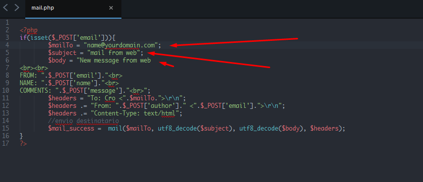

Thank you for purchasing our theme.If you have any questions that are beyond the scope of this help file, please feel free to contact me
CRO is fully responsive HTML5 Template followed HTML5 Structure.This format is used in all pages. Every section is seperated with Comments. We maintain all Coding Procedure.
<!--================
Navigation
====================-->
<nav id="main-nav-top">
</nav>
<!--Navbar end-->
<!--================
Header
====================-->
<header id="header">
</header>
<!-- /. end header -->
<!--=================================
Section two: Services
===============================-->
<section id="services">
</section>
<!-- /. end Section two: Servicese -->
<!--========================================
Section Three: About us
=========================================-->
<section id="about">
</section>
<!-- /. end Section Three: About us-->
<!--===========================
Section Four: Porftfolio
============================-->
<section id="portfolio">
</section>
<!-- /. end Section Four: Porftfolio -->
<!--========================
Section five: intro Video
=========================-->
<section class="intro-video">
</section>
<!-- /. end Section five: intro Video-->
<!--================================
Section six: Team member
==================================-->
<section id="team">
</section>
<!-- /. end Section six: Team member-->
<!--=================================
Section seven: Blog
==================================-->
<section class="blog" id="blog">
</section>
<!-- /. end Section seven: Blog -->
<!--==============================
Section Eight: Testimonial
===============================-->
<section class="testimonial-slider">
</section>
<!-- /. end Section Eight: Testimonial -->
<!--=================================
Section Nine: conact
==================================-->
<section id="contact">
</section>
<!-- /. end Section Nine: conactd -->
<!--==========================
Tenth Section: Contact
===========================-->
<section id="contact">
</section>
<!-- end contact -->
<!--=======================
Section ten: Client slider
=========================-->
<footer id="footer">
</footer>
<!-- end Section ten: Client slider -->
<!--========================
Section Eleven: footer
=========================-->
<!-- end footer -->
We have used latest CSS coding standard. Custom Style written into style.css which is also override some Bootstrap style. Responsive style rules have written into responsive.css.
Main CSS Folder included three sub-folder:
<!--================
CSS
==================-->
<!-- Bootstrap CSS-->
<link rel="stylesheet" href="css/plug-in/bootstrap.min.css" type="text/css" media="all" />
<!-- Owl Carousel CSS -->
<link href="css/plug-in/owl.carousel.css" rel="stylesheet">
<link rel="stylesheet" href="css/plug-in/owl.theme.css" />
<!-- Animate CSS -->
<link href="css/plug-in/animate.css" rel="stylesheet">
<!-- Icon Font CSS -->
<link rel="stylesheet" href="fonts/fontello/css/fontello.css" type="text/css" media="all" />
<!-- Main CSS -->
<link rel="stylesheet" href="css/custom/style.css" type="text/css" media="all" />
<!-- Responsive CSS -->
<link rel="stylesheet" href="css/custom/responsive.css" type="text/css" media="all" />
<!-- Default color CSS -->
<link rel="stylesheet" href="css/color/shakespeare.css" />
The default color of the theme is shakespeare and currently shakespeare.css stylesheet is active. Rest of the color stylesheets are commented. if you want to change the default color, just open index.html in your code editor and copy any line of predefined stylesheet which is named of your favourite color and currently commented as showing below:
<!--======================================== optional colors, currently commented ==========================================--> <!--=============================================================================== <link rel="stylesheet" href="css/color/eastern-blue.css" type="text/css" media="all"> <link rel="stylesheet" href="css/color/cinnabar.css" type="text/css" media="all"> <link rel="stylesheet" href="css/color/seance.css" type="text/css" media="all"> <link rel="stylesheet" href="css/color/yellow-orange.css" type="text/css" media="all"> <link rel="stylesheet" href="css/color/jade.css" type="text/css" media="all"> <link rel="stylesheet" href="css/color/sushi.css" type="text/css" media="all"> <link rel="stylesheet" href="css/color/amber.css" type="text/css" media="all"> ======================================================================================-->
and replace the line below " <!-- Default Color CSS --> " this line with copied line as showing:
<!-- Default color CSS --> <link rel="stylesheet" href="css/color/royal-blue.css" type="text/css" media="all"/>
This theme imports the following Javascript files.
<!--================
SCRIPT
====================-->
<!-- JQUERY -->
<script src="js/jquery.min.js" type="text/javascript"></script>
<!-- BOOTSTRAP.JS -->
<script src="js/bootstrap.min.js"></script>
<!-- OWL-CAROUSEL.JS -->
<script src="js/owl.carousel.min.js" type="text/javascript"></script>
<!-- SCROLLING.JS -->
<script src="js/jquery.easing.min.js" type="text/javascript"></script>
<script src="js/scrolling-nav.js" type="text/javascript"></script>
<!-- VELOCITY.MIN.JS -->
<script type='text/javascript' src='js/velocity.min.js'></script>
<!-- VELOCITY.UI.MIN.JS -->
<script type='text/javascript' src='js/velocity.ui.min.js'></script>
<!-- FILTERIZR.JS -->
<script src="js/jquery.filterizr.js"></script>
<!-- wow.min.js -->
<script type='text/javascript' src='js/wow.min.js'></script>
<!-- custom.JS -->
<script src="js/custom.js" type="text/javascript"></script>
We used WOW plugin to trigger animations on scroll. It used Animate.css for CSS animation. You will find all of the animations in Animate.css website. To learn more about WOW please read their Documentation.
<div class="wow fadeInUp" data-wow-duration="2s">
</div>
We have used Fontello font icon throughout the template.These icon font sets can be styled dynamically using CSS.
<span class="icon-menu"></span>
Complete list of Icon here : http://fontello.com/
Please Open the mail.php file and see this screenshot. You can add your email from there
Find these line in the index.html files SECTION FIVE: VIDEO and change the src=" " with embeded link of your agency intro video from youtube.
<!-- link of your app video --> <div class="modal-body"> <iframe class="video" src="https://www.youtube.com/embed/m5jmNrUUnrw" allowfullscreen> </iframe> </div>
We have used google map in "section nine: contact" .
You can easily point out your place on the google map. All you have to do is visit and fill the form with appropiate info, then copy the iframe code find and replace the line below.
<iframe width="100%" height="620" src="http://www.citymaps.ie/create-google-map/map.php?width=100%&height=600&hl=en&coord=24.8936,91.8639&q=Mirza%20Jangal%20Rd%2C%20Sylhet%203100+(%20Nirvana%20Inn)&ie=UTF8&t=&z=14&iwloc=A&output=embed" frameborder="0" scrolling="no" marginheight="0" marginwidth="0"> </iframe>
Dont forget to kepp the height 620px.
The following jQuery files including necessary plugins, all of them be found in assets js folder of home directory. Let's see what each file for:
Finally thank you very much for purchasing this theme. Please keep that in mind that we are working very hard to providing better quality in coming days.If you have any questions relating to this template we'll do our best to assist.
Finally dont forget to rate us.
E-mail: support@ficute.com